Detailed qwanaflow workflow
Typical use of qwanaflow
For most users, the qwanaflow command-line utility should provide sufficient functionality for obtaining a dataset of wood cell measurements. The options for this command can be displayed as such:
# The exclamation mark indicates that this command is run by the shell and not by python
# Indeed, qwanaflow should be launched from the command line
!qwanaflow --help
usage: qwanaflow [-h] [--remove-suffix REMOVE_SUFFIX] [--pixel-size PIXEL]
[--dir-nrows NROWS] [--dir-ncols NCOLS] [--disable-plots]
[--area-threshold AREA_THRESHOLD]
[--solidity-threshold SOLIDITY_THRESHOLD]
[--max-wall-distance MAX_WALL_DISTANCE]
[--vm-threshold VMTHRESHOLD] [--angle-tolerance ANGLE]
[--stitch-angle-tolerance STITCH_ANGLE]
[--scan-width SCAN_WIDTH] [--ncores NCORES]
input output
positional arguments:
input If a single directory, all png files in that directory
will be processed. If a single .png file, process only
that file. If a single .txt file, should be a file
containing a list of files to process, with one .png
file per line.
output A directory to write output files to.
options:
-h, --help show this help message and exit
--remove-suffix REMOVE_SUFFIX
String to remove from the input filename when
generating the sample base name. Default: '.png'
--pixel-size PIXEL Conversion factor from of a single pixel to the
desired measurement unit. Defaults to 1 (measurements
in pixels).
--dir-nrows, -r NROWS
Number of rows to split the image into for the
directionality analysis. If None (the default), the
number of rows and colums is automatically determined.
--dir-ncols, -c NCOLS
Number of columns to split the image into for the
directionality analysis. If None (the default), the
number of rows and colums is automatically determined.
--disable-plots Specify this flag to disable the generation of angle
plots. By default they will be produced.
--area-threshold AREA_THRESHOLD
Lumen area above which a cell can be considered for
splitting into several cells using the watershed
segmentation algorithm. For a cell to be selected, it
must also be below the solidity threshold. Defaults to
500.
--solidity-threshold SOLIDITY_THRESHOLD
Solidity threshold below which a cell can be
considered for splitting into several cells using the
watershed segmentation algorithm. Higher values
(closer to 1) indicate a more convex shape whereas
lower values (closer to 0) indicate concavity
(presence of indentations). For a cell to be selected,
it must also be above the lumen area threshold.
Defaults to 0.95.
--max-wall-distance MAX_WALL_DISTANCE
The maximum distance (in the target measurement unit
defined by --pixel-size) between a cell wall pixel and
the nearest cell lumen for that pixel to be considered
as belonging to the cell. This parameter effectively
puts a cap on the maximum possible cell wall
thickness. Defaults to 10.
--vm-threshold VMTHRESHOLD
The convergence threshold in the search of von Mises
distribution parameters. Lower values result in more
precise results but slower convergence. Defaults to
0.001.
--angle-tolerance ANGLE
The tolerance (in degrees) around the lower and upper
bounds found by the directionality algorithm in
determining which cell adjacencies are radial and
which are tangential. A higher value means potentially
longer, but inexact, radial files. Defaults to 5.
--stitch-angle-tolerance STITCH_ANGLE
The tolerance (in degrees) around the lower and upper
bounds found by the directionality algorithm in
determining which cell adjacencies are radial and
which are tangential. This angle is applied after the
initial radial file assignment in stitching together
radial files and should therefore use a more
permissive angle threshold. Defaults to 20.
--scan-width SCAN_WIDTH
The width (in pixels) of the rectangle to use when
computing wall thickness at the boundary between two
cells. If None (the default), qwanaflow dynamically
computes the scan width for each cell pair to 75% of
the average of the two cells' diameter. Explicitly
setting the scan width provides faster computation
(especially for lower values) but is potentially less
accurate.
--ncores NCORES The number of processes to launch for multiprocessing
during some cell measurement steps. Defaults to 1 (no
multiprocessing).
For example, a complete analysis may be launched from the command line as follows:
# Again, the exclamation mark here indicates that this command is passed to the shell
#
# Optional arguments
# --ncores 4: multiprocessing with 4 cores
# --vm-threshold 0.1: the threshold to use when searching for directionality parameters
# --disable-plots: do not produce the diagnostic plots that would be produced by default
# --pixel-size 0.55042690590734: each pixel corresponds to 0.55042690590734 micrometers
# Mandatory positional arguments
# ../tests/data/test_image.png: the path to the input image
# test_output: the path to the directory to which outputs will be written
!qwanaflow --ncores 4 --vm-threshold 0.1 --pixel-size 0.55042690590734 --disable-plots ../tests/data/test_image.png test_output
Running workflow on test_image
Reading input image
runtime : 0:00:00.050387
Labeling individual cells
runtime : 0:00:00.123081
Measuring lumen-related features
runtime : 0:00:04.684940
Splitting cells using watershed algorithm
runtime : 0:00:06.383946
Compute distance from cell wall pixel to nearest lumen
runtime : 0:00:07.280100
Measuring whole cell-related features
runtime : 0:00:08.020270
Producing region adjacency graph
runtime : 0:00:09.854384
Analyzing directionality and classifying edges
runtime : 0:00:11.347167
Assigning cells to radial files
runtime : 0:00:14.200429
Measuring lumen diameters
runtime : 0:00:17.070718
Measuring wall thickness
runtime : 0:00:41.746824
Successfully run
Saving outputs
Saved workflow output to test_output/test_image_outputs
runtime : 0:00:44.294480
Some users may want more control over the analytical workflow or use the functions provided by qwanamiz as a standalone library. If this is your case, or if you simply want to better understand what qwanaflow does under the hood, please read on. Indeed, the code below closely mirrors the sequence of function calls made by the qwanaflow command-line tool. This detailed discussion will also allow you to better understand the parameters passed as arguments to qwanaflow.
Importing qwanamiz utilities and other required modules
First, we load the qwanamiz functions that used in this example as well as some other modules.
import qwanamiz.qwanamiz as qmiz # main qwanamiz functions
import qwanamiz.qwanaplots as qplots # qwanamiz plotting functions
import os # operating-system related utilities
import matplotlib.pyplot as plt # plotting library
# Setting some parameters for matplotlib figures
%matplotlib inline
plt.rcParams['figure.figsize'] = (8, 8)
Test image
The image we will use as an example displays a few growth rings from a subfossil Picea mariana sample. The image is 3000x3000 pixels, which is smaller than the typical images generated in quantitative wood anatomy, but suitable for demonstration purposes.
We can read the image as a numpy array under the name bw_image (black & white image) using the function read_image. Zeros and ones correspond to cell wall and lumen pixels, respectively. qwanaflow expects such a binarized image, which must be obtained from the original image using third-party tools.
bw_image_path = os.path.join("..", "tests", "data", "test_image.png")
bw_image = qmiz.read_image(bw_image_path)
plt.imshow(bw_image, cmap = 'gray');
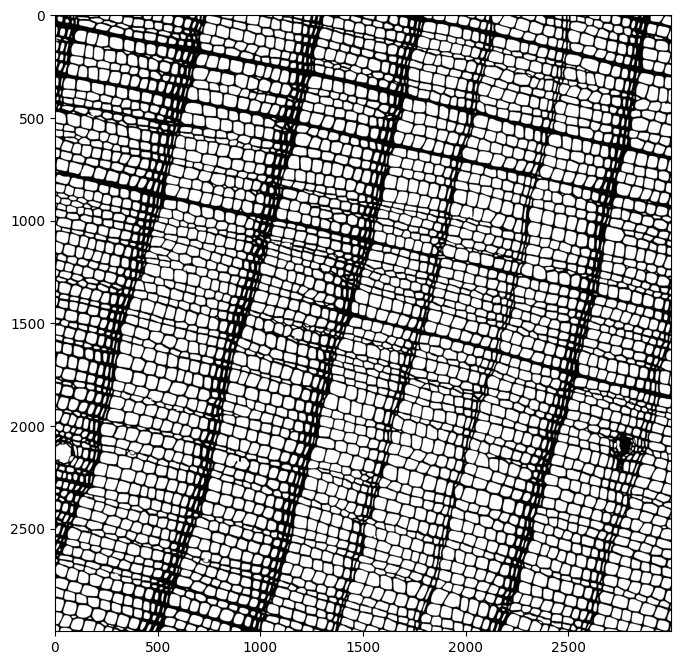
Cell labelling and basic measurements
A critical step of the analysis workflow is labelling the image, that is, identifying individual cells. This is performed using the function label_cells, which is a wrapper for functionality provided by scikit-image. This step labels all the lumens from individual cells and assigns a unique integer to each.
labeled_image = qmiz.label_cells(bw_image)
plt.imshow(labeled_image);
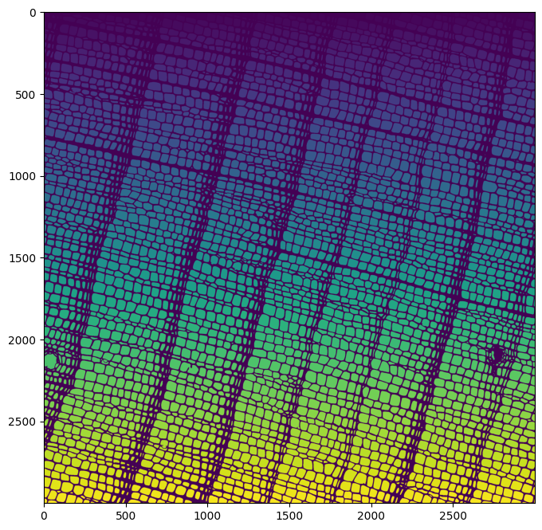
Once the cells are labeled, we can compute some lumen properties using the function measure_lumens. This function is essentially a wrapper for scikit-image’s regionprops_table function. Many properties are available and described in the official documentation, but only a few are necessary for downstream analyses.
Prior to computation, we need to set the scaling from pixels to micrometers so we get measurements in micrometers. Here, this scaling parameter is 0.55043 micrometers per pixel because the resolution of our image is 46146 dpi. In typical qwanaflow usage, this value would be provided as a command-line argument (the --pixel-size argument).
Multiprocessing is enabled within measure_lumens, so we use 4 cores here to speed up computation. This parameter can be set from the command line using the argument --ncores.
# Setting the scaling from pixels to micrometers
pix_to_um = 0.55043
# Computing the properties of the cell lumens and returning a pandas DataFrame
cell_df = qmiz.measure_lumens(labeled_image, spacing = pix_to_um, nprocesses = 4)
cell_df.info()
<class 'pandas.DataFrame'>
Index: 4554 entries, 0 to 1139
Data columns (total 14 columns):
# Column Non-Null Count Dtype
--- ------ -------------- -----
0 label 4554 non-null int64
1 area 4554 non-null float64
2 major_axis_length 4554 non-null float64
3 minor_axis_length 4554 non-null float64
4 centroid-0 4554 non-null float64
5 centroid-1 4554 non-null float64
6 orientation 4554 non-null float64
7 perimeter_crofton 4554 non-null float64
8 image 4554 non-null object
9 bbox-0 4554 non-null int64
10 bbox-1 4554 non-null int64
11 bbox-2 4554 non-null int64
12 bbox-3 4554 non-null int64
13 solidity 4554 non-null float64
dtypes: float64(8), int64(5), object(1)
memory usage: 533.7+ KB
Now that we have these measurements, we can further refine the set of identified cells. Because the image binarization step is often imperfect, it is likely that groups of two or more distinct cells will appear merged together and show up in the output as large cells with an irregular shape. We can identify such cells using those properties and use a watershed-based segmentation algorithm to properly redefine cell lumen boundaries. The parameters for identifying the cells that may need segmentation are controllable using the command-line parameters --area-threshold and --solidity-threshold.
# Cells with area > 500 squared micrometers and solidity < 0.95 will be considered by the watershed algorithm
# This function updates the labeled_image and cell_df with redefined values
# watershed_result is an integer array that identifies the cells whose ID was potentially redefined
# area_threshold corresponds to --area-threshold command-line parameter
# solidity_threshold corresponds to --solidity-threshold command-line parameter
labeled_image, cell_df, watershed_result = qmiz.adjust_labels(labeled_image,
cell_df,
scale = pix_to_um,
area_threshold = 500,
solidity_threshold = 0.95)
# Zooming in on three cells that were split by the segmentation algorithm
plt.imshow(watershed_result[2130:2250,820:1000], cmap = 'gray');
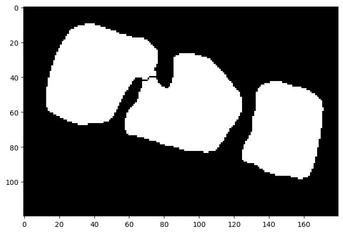
As we can see from the brighter yellow cells in the labeled_image array, several cells had their lumens redefined this way by the segmentation algorithm.
# The cells that were considered by the watershed algorithm are a brighter yellow because their index
# is greater than those of the cells that were defined by the original labeling
plt.imshow(labeled_image);
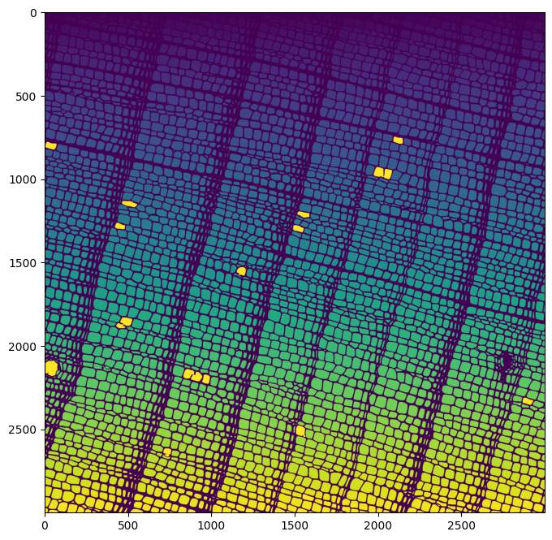
By now, we already have several of the measurements that one would expect from a quantitative wood anatomy dataset. However, we have yet to measure lumen diameter and cell wall thickness. In preparation for measuring cell walls, we compute an array that stores the distance from each cell wall pixel to the nearest cell lumen pixel. This array is also useful to determine which cell each wall belongs to. In the image below, we can see that the cell walls of latewood cells appear a brighter blue because their cell walls are thicker.
# distance_map: array containing the distance to the nearest lumen pixel
# nearest_label_coords: an array containing the ID (label) of the nearest lumen
distance_map, nearest_label_coords = qmiz.measure_distance(labeled_image = labeled_image,
scaling = pix_to_um)
# Displaying the distance map
plt.imshow(distance_map);
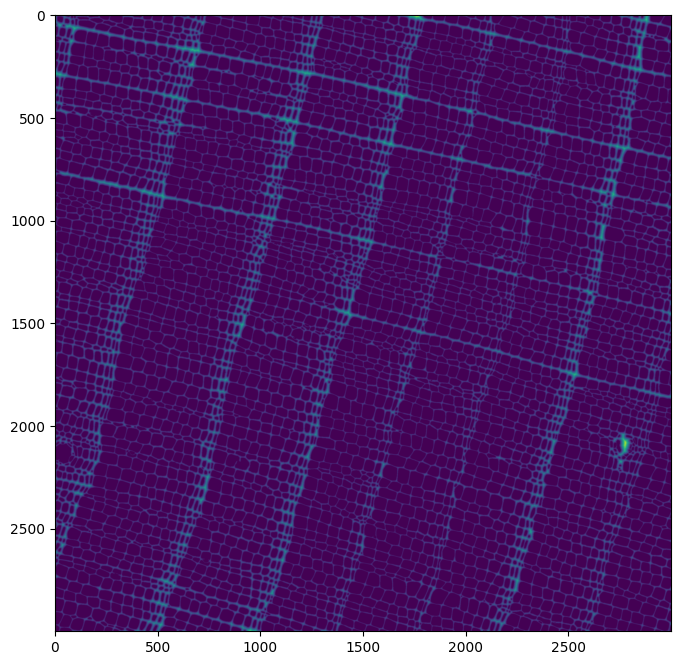
Based on the distance array and the map of the cell label nearest to each cell wall pixel, we can expand the cells beyond their lumen to also include their walls. The maximum distance between a cell wall pixel and the closest lumen for the pixel to be assigned to a cell is controllable through the command-line parameter --max-wall-distance, which we set here to the default of 10. Here, 10 means 10 micrometers but this depends on the value of the --pixel-size parameter (which defaults to 1). By default, this means that a cell wall cannot be thicker than 10 pixels, which may or may not be appropriate based on the species and image resolution. Indeed, the --max-wall-distance parameter effectively constrains the maximum thickness that a cell wall may have. For the image that we are working with, this is hardly an issue as walls are typically thinner than that.
# max_distance parameter: the maximum distance between a cell wall pixel and the nearest cell lumen.
# corresponds to the --max-wall-distance command-line parameter
expanded_labels = qmiz.expand_cells(labeled_image,
distance_map,
nearest_label_coords,
max_distance = 10)
plt.imshow(expanded_labels);
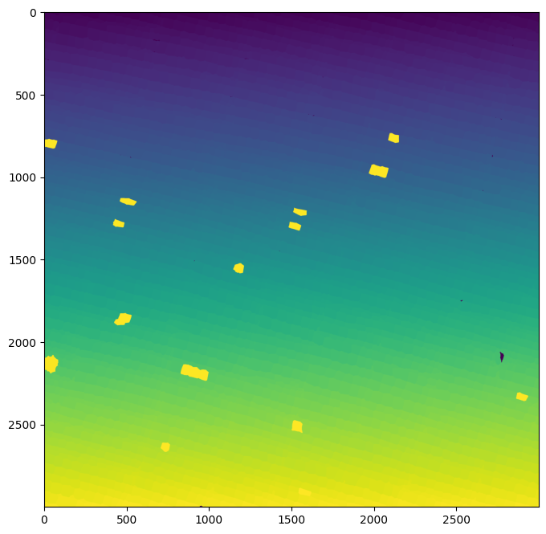
Now, we can measure the area of the whole cells using the same approach as we did earlier for lumens.
# Measuring cell area on whole cells
# This data is added to the already existing DataFrame of lumen measurements
cell_df = qmiz.measure_cells(cell_df, expanded_labels, spacing = pix_to_um)
Directionality analysis
Now that we have an array assigning each pixel to a cell, we can build a region adjacency graph (RAG) that stores information on which cells are adjacent to each other. This data structure will allow us to draw radial files and measure cell wall thickness across tangential and radial directions, among other things.
We build the RAG using the function adjacency_dataframe, which also computes the angle between the centroids of the two cells (angle column), the location of the point that is exactly midway between those centroids (center column), as well as the distance between the two centroids (length). The resulting DataFrame is indexed using tuples of cell-pair labels that are adjacent to each other.
# Creating a DataFrame of cell adjacencies
rag_df = qmiz.adjacency_dataframe(expanded_labels, cell_df)
rag_df.info()
<class 'pandas.DataFrame'>
MultiIndex: 13291 entries, (np.int32(612), np.int32(676)) to (np.int32(1414), np.int32(4562))
Data columns (total 7 columns):
# Column Non-Null Count Dtype
--- ------ -------------- -----
0 solidity 13291 non-null float64
1 solidity_label2 13291 non-null float64
2 centroid1 13291 non-null object
3 centroid2 13291 non-null object
4 angle 13291 non-null float64
5 center 13291 non-null object
6 length 13291 non-null float64
dtypes: float64(4), object(3)
memory usage: 814.2+ KB
Determining which cell adjacencies are along the radial direction (from pith to bark) and which are along the tangential direction (parallel to ring boundaries) is a significant challenge. In qwanamiz, this problem is solved by using the fact that radial adjacencies tend to cluster around the same angle due to the directional nature of wood growth. The most common adjacency angle should therefore correspond to the radial direction, despite most adjacency relationships being tangential. By finding the peak of the distribution of adjacency angles, we are able to automatically determine the direction along which growth occurs (the radial direction).
Because of naturally occurring irregularities in growth, the radial direction may not always be exactly the same across a given image. To account for this, directionality analysis is done separately on distinct sections of the image. By default, calling qwanaflow as a command-line utility will automatically determine the number of rows and columns to split the image into. This default behaviour can be overriden by explicitly setting the --dir-nrows and --dir-ncols arguments. Here, we set the number of rows and columns to None, which will trigger qwanaflow to determine the number of rows and columns automatically.
The directionality analysis assumes that the adjacency angles are distributed according to a mixture of three von Mises distributions. A von Mises distribution is analogous to the normal distribution but for values distributed around a circle, and therefore wrapped at 0/360 degrees. Finding the angle of the radial direction can be reduced to fitting the observed distribution of angles to a mixture of three von Mises distributions and extracting the value corresponding to the highest peak. The command-line argument --vm-threshold determines how close the approximated distribution must be to the distribution of raw values before the algorithm declares that convergence is reached. Lower values will result in more precise values, but longer computation time. Here, we use a more permissive value (0.1) than the stringent default (0.001) to speed up computation.
# qwanaflow first determines the outline of the sample to avoid analyzing
# regions that do not contain cells
hull_mask, close_c, hull_c = qmiz.get_sample_contour(expanded_labels)
# This function returns the updated rag_df DataFrame and the parameters of the von Mises distributions
# num_rows corresponds to the --dir-nrows command-line parameter
# num_cols corresponds to the --dir-ncols command-line parameter
# convergence_threshold corresponds to the vm-threshold command-line parameter
rag_df, vm_parameters, nrows, ncols = qmiz.directionality(rag_df,
image_height = bw_image.shape[0],
image_width = bw_image.shape[1],
sample_mask = hull_mask,
spacing = pix_to_um,
num_rows = None,
num_cols = None,
convergence_threshold = 0.1)
# Let us look at the updated rag_df DataFrame
rag_df.info()
<class 'pandas.DataFrame'>
MultiIndex: 13291 entries, (np.int32(612), np.int32(676)) to (np.int32(1414), np.int32(4562))
Data columns (total 10 columns):
# Column Non-Null Count Dtype
--- ------ -------------- -----
0 solidity 13291 non-null float64
1 solidity_label2 13291 non-null float64
2 centroid1 13291 non-null object
3 centroid2 13291 non-null object
4 angle 13291 non-null float64
5 center 13291 non-null object
6 length 13291 non-null float64
7 subsample_index 13291 non-null str
8 lower_bound 13291 non-null float64
9 upper_bound 13291 non-null float64
dtypes: float64(6), object(3), str(1)
memory usage: 1.5+ MB
As can be seen from the above output, directionality has added two columns lower_bound and upper_bound to the DataFrame of adjacencies. These correspond, respectively, to the smallest and largest angle (in radians) that are considered to belong to radial adjacencies.
For debugging purposes, qwanaflow will write an image to disk showing the observed distribution of adajcency angles and the von Mises distributions that were fit. This plot, which can be disabled using the --disable-plots command-line argument, can be produced with the function plot_angles. Here, we can see that the von Mises distributions (red lines) fit the empirical distributions (blue lines) very well.
angle_plot = qplots.plot_angles(params = vm_parameters, num_rows = 3, num_cols = 2)
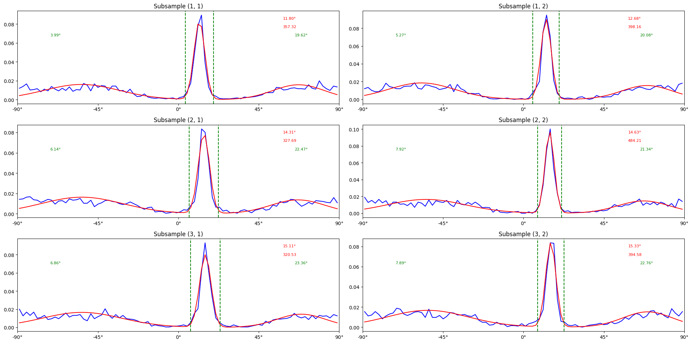
The function plot_directionality displays an image with arrows showing the direction of radial growth determined by the directionality analysis for each sub-panel. This may be useful for debugging images that yield unexpected results.
qplots.plot_directionality(base_image = bw_image, vm_params = vm_parameters, scaling = pix_to_um)
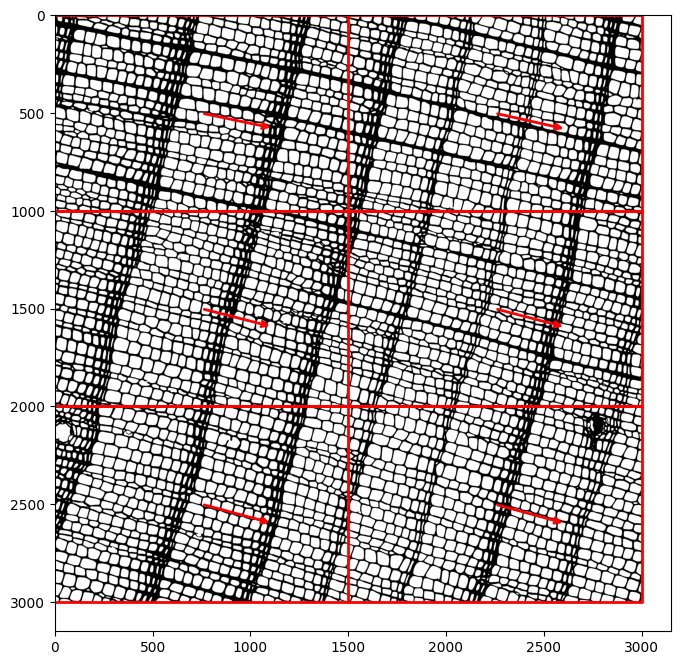
Using the lower and upper bounds from the directionality analysis, we can classify cell adjacencies based on the angle between them. The function classify_edges will accordingly add a direction column to the rag_df DataFrame and accepts a tolerance parameter (in degrees) around the lower and upper bounds. This allows for cells that are radially adjacent but whose angle departs from the local mean angle to still be considered as such. This parameter is controllable from the command-line using the argument --angle-tolerance.
# This function updates the rag_df DataFrame
# tolerance corresponds to the --angle-tolerance command-line argument
rag_df = qmiz.classify_edges(rag_df, tolerance = 5)
rag_df['direction'].value_counts()
direction
tangential 9168
radial 4123
Name: count, dtype: int64
We can now visualize which cell adjacencies have been identified as radial, which we can do using the function plot_adjacencies by selecting adjacencies of the appropriate type. The results look as we would expect.
qplots.plot_adjacencies(base_image = bw_image,
adjacency = rag_df,
scaling = pix_to_um,
adj_type = 'radial')
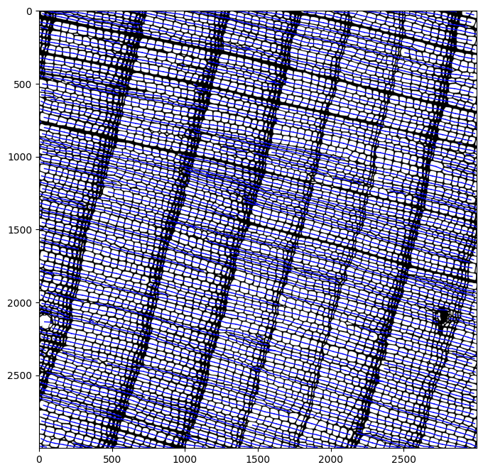
We can also see which cell adjacencies have been identified as tangential. Again, the results are as we would expect.
qplots.plot_adjacencies(base_image = bw_image,
adjacency = rag_df,
scaling = pix_to_um,
adj_type = 'tangential',
color = 'red')
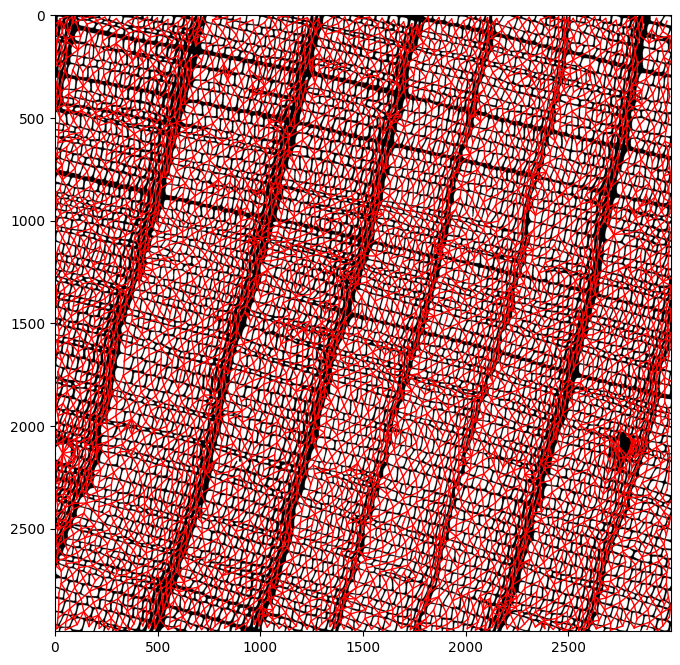
Assigning radial files
We can use the classified adjacencies to assign the cells to radial files. In qwanaflow, this is a two-step process:
First, radial files are initialized from cells that have no radially adjacent cell to their left. Then, the radial files are grown towards the right by iteratively adding adjacent cells in the radial direction. This process is done for each radial file until they cannot grow anymore because a cell does not have a radially adjacent neighbor.
Second, radial files are joined using a more permissive threshold for considering two adjacent cells as radial. Internally to the function, cell adjacencies are reclassified using a more premissive threshold for cells to be considered radially adjacent. This threshold is controlled using the
--stitch-angle-tolerancecommand-line parameter, which defaults to 20 degrees.
The function assign_radial_files updates both the cell-level DataFrame (here, cell_df) and the DataFrame of adjacencies (here, rag_df) with critical information for the rest of the workflow.
# stitch_angle_tolerance corresponds to the --stitch-angle-tolerance command-line parameter
cell_df, rag_df = qmiz.assign_radial_files(cell_df, rag_df, stitch_angle_tolerance = 20)
While the adjacency-level DataFrame is simply updated to reflect changes in wall classification at the radial file joining step, the cell-level DataFrame now contains the following additional columns:
classification: whether the cell is isolated (not part of a radial file), extremity (located at the beginning or end of a radial file), or regular (located somewhere in the middle a of radial file)radial_file: an integer identifying which radial file the cell belongs tofile_rank: an integer identifying the position of the cell within its radial fileleft_neighbor: the identifier of the cell that precedes this one in the radial file, for quick look-upsleft_angle: the angle (in degrees) of this cell relative to its left neighborright_neighborandright_angle: analogous to their left-neighbor counterparts
cell_df.info()
<class 'pandas.DataFrame'>
Index: 4557 entries, 1 to 4573
Data columns (total 22 columns):
# Column Non-Null Count Dtype
--- ------ -------------- -----
0 label 4557 non-null int64
1 area_lumen 4557 non-null float64
2 major_axis_length 4557 non-null float64
3 minor_axis_length 4557 non-null float64
4 centroid-0 4557 non-null float64
5 centroid-1 4557 non-null float64
6 orientation 4557 non-null float64
7 perimeter_crofton 4557 non-null float64
8 image 4557 non-null object
9 bbox-0 4557 non-null int64
10 bbox-1 4557 non-null int64
11 bbox-2 4557 non-null int64
12 bbox-3 4557 non-null int64
13 solidity 4557 non-null float64
14 area_cell 4557 non-null float64
15 classification 4555 non-null object
16 radial_file 4555 non-null object
17 file_rank 4555 non-null object
18 left_neighbor 4557 non-null int64
19 left_angle 4557 non-null float64
20 right_neighbor 4557 non-null int64
21 right_angle 4557 non-null float64
dtypes: float64(11), int64(7), object(4)
memory usage: 947.9+ KB
We can visualize the radial files that were found using the function plot_radial_files. We can see that many of them span the whole width of the image.
qplots.plot_radial_files(base_image = bw_image, cells = cell_df, scaling = pix_to_um)
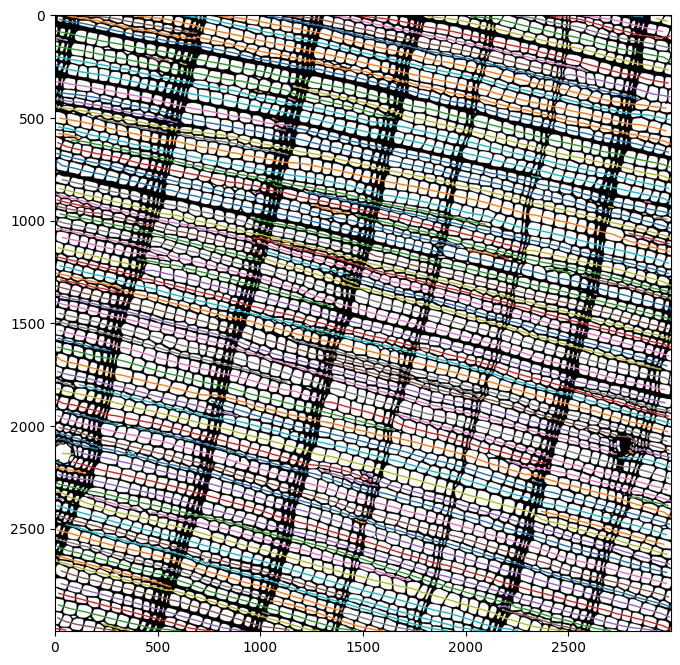
Measuring lumen diameters
Having the information on radial files and left/right neighbors allows for more precise measurement of lumen diameter because the angle of radial and tangential directions can now be estimated more accurately from local adjacencies. The function measure_diameters accordingly measures the diameters of cells along the radial and tangential directions. Multiprocessing is enabled for this function, which can be controlled using the command-line argument --ncores.
# Computing cell diameters in parallel on 4 cores
# The number of cores is controlled using the --ncores command-line argument
cell_df = qmiz.measure_diameters(cell_df, spacing = pix_to_um, nprocesses = 4)
cell_df.info()
<class 'pandas.DataFrame'>
Index: 4557 entries, 1 to 4573
Data columns (total 27 columns):
# Column Non-Null Count Dtype
--- ------ -------------- -----
0 label 4557 non-null int64
1 area_lumen 4557 non-null float64
2 major_axis_length 4557 non-null float64
3 minor_axis_length 4557 non-null float64
4 centroid-0 4557 non-null float64
5 centroid-1 4557 non-null float64
6 orientation 4557 non-null float64
7 perimeter_crofton 4557 non-null float64
8 image 4557 non-null object
9 bbox-0 4557 non-null int64
10 bbox-1 4557 non-null int64
11 bbox-2 4557 non-null int64
12 bbox-3 4557 non-null int64
13 solidity 4557 non-null float64
14 area_cell 4557 non-null float64
15 classification 4555 non-null object
16 radial_file 4555 non-null object
17 file_rank 4555 non-null object
18 left_neighbor 4557 non-null int64
19 left_angle 4557 non-null float64
20 right_neighbor 4557 non-null int64
21 right_angle 4557 non-null float64
22 diameter_rad 4349 non-null object
23 diameter_tan 4349 non-null object
24 extr_rad 4349 non-null object
25 extr_tan 4349 non-null object
26 mean_angle 4349 non-null object
dtypes: float64(11), int64(7), object(9)
memory usage: 996.8+ KB
Measuring the diameters added the following columns to the cell-level DataFrame:
diameter_rad: the diameter of the lumen along the radial directiondiameter_tan: the diameter of the lumen along the tangential directionextr_rad: the coordinates of the points along which the radial diameter was measured, as a pair of length-two tuples with (y,x) coordinatesextr_tan: similar toextr_rad, but for the tangential diametermean_angle: the average angle between this cell and its left and right neighbors; it is a local estimate of the radial direction
The lines representing the diameters can be visualized with the function plot_diameters, with radial diameters in blue and tangential diameters in green.
qplots.plot_diameters(base_image = bw_image, cells = cell_df, scaling = pix_to_um)
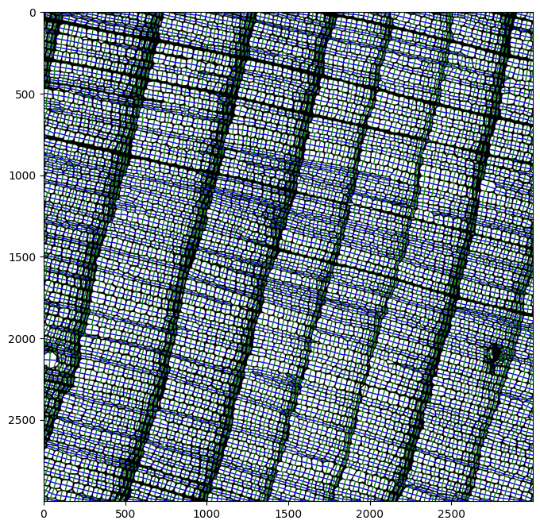
Measuring cell walls
The final step of the workflow measures the thickness of the cell walls across the radial and tangential directions using the function measure_walls. In the radial direction, wall thickness is measured across a cell and its left/right neighbors. In the tangential direction, wall thickness is measured across a cell and its vertically adjacent neighbors that are most closely perpendicular to the local radial direction.
Measuring wall thickness between two cells is a fine-scale procedure that involves several steps. First, a rectangle is drawn between the two cells. This rectangle’s length spans the distance between the two cells’ centroids whereas its width can be explicitly set using the command-line argument --scan-width or left for qwanaflow to dynamically determine for each cell pair. By default (--scan-width None), qwanaflow will compute the scan width to span 75% of the average diameter of the cells across the direction parallel to the wall being measured. Then, for each row of pixels along this rectangle, the maximum wall thickness (stored in distance_map) along this row is determined. Averaging the wall thickness values for all such rows in the rectangle yields the average wall thickness between the two cells. This value is attributed as the wall thickness to each cell in the respective direction in which it was measured (left, right, up, or down).
Since this operation is computationally expensive but easily parallelized on different measurements, this command allows for multiprocessing using the --ncores command-line argument.
# Computing cell wall thickness
# the scan_width parameter is the --scan-width command-line argument
# The nprocesses parameter is the --ncores command-line argument
cell_df = qmiz.measure_walls(cell_df,
rag_df,
distance_map,
scale = pix_to_um,
scan_width = None,
nprocesses = 4)
cell_df.info()
<class 'pandas.DataFrame'>
Index: 4557 entries, 1 to 4573
Data columns (total 34 columns):
# Column Non-Null Count Dtype
--- ------ -------------- -----
0 label 4557 non-null int64
1 area_lumen 4557 non-null float64
2 major_axis_length 4557 non-null float64
3 minor_axis_length 4557 non-null float64
4 centroid-0 4557 non-null float64
5 centroid-1 4557 non-null float64
6 orientation 4557 non-null float64
7 perimeter_crofton 4557 non-null float64
8 image 4557 non-null object
9 bbox-0 4557 non-null int64
10 bbox-1 4557 non-null int64
11 bbox-2 4557 non-null int64
12 bbox-3 4557 non-null int64
13 solidity 4557 non-null float64
14 area_cell 4557 non-null float64
15 classification 4555 non-null object
16 radial_file 4555 non-null object
17 file_rank 4555 non-null object
18 left_neighbor 4557 non-null int64
19 left_angle 4557 non-null float64
20 right_neighbor 4557 non-null int64
21 right_angle 4557 non-null float64
22 diameter_rad 4349 non-null object
23 diameter_tan 4349 non-null object
24 extr_rad 4349 non-null object
25 extr_tan 4349 non-null object
26 mean_angle 4349 non-null object
27 up_neighbor 4557 non-null int64
28 down_neighbor 4557 non-null int64
29 left_wall_thickness 4557 non-null float64
30 right_wall_thickness 4557 non-null float64
31 down_wall_thickness 4557 non-null float64
32 up_wall_thickness 4557 non-null float64
33 WallThickness 4557 non-null float64
dtypes: float64(16), int64(9), object(9)
memory usage: 1.3+ MB
The function measure_walls added the following columns to the DataFrame of metadata at the cell level (cell_df):
up_neighbor: the label of the cell’s upwards neighbor perpendicularly to the radial directiondown_neighbor: similar toup_neighborfor the downwards neighborleft_wall_thickness: the thickness of the wall between the cell and its left neighborright_wall_thickness: same as previous for right neighbordown_wall_thickness: same as previous for downwards neighborup_wall_thickness: same as previous for upwards neighborWallThickness: average ofleft_wall_thicknessandright_wall_thickness(average cell wall thickness for tangential walls)
Writing the output to disk
The rest of the qwanaflow command writes the results of the analysis to disk.
# This function call removes some columns that are not needed from cell_df
# and adds a column for the sample ID
cell_df = qmiz.prepare_cell_output(cells = cell_df, sampleID = "test_image")
# One typically would not need to specify the arguments and call this function manually
# qwanaflow takes care of computing the appropriate values according to command-line parameters
qmiz.write_qwanaflow_outputs(output = 'test_output',
base_name = 'test_image',
prediction = bw_image,
distance_map = distance_map,
expanded_labels = expanded_labels,
labeled_image = labeled_image,
watershed_result = watershed_result,
vm_parameters = vm_parameters,
nrows = nrows,
ncols = ncols,
cell_df = cell_df,
adjacency = rag_df,
noplots = True)
The above command would produce the following output files :
test_image_adjacency.csv: a CSV file containing the information from the adjacency DataFramerag_df.test_image_angles.png: an image showing the angles measured for each tile of the image for the directionality analysis. Producing this plot can be disabled usingnoplots = True(as was done here), or through the--disable-plotscommand-line argument.test_image_cells.csv: a CSV file containing information from the cell measurements DataFramecell_df.test_image_filtered.csv: a CSV file containing information on cell measurements, but for cells that were filtered out due to being isolated or not belonging to a radial file.test_image_imgs.npz: a set of images in compressed numpy format (original binarized image, labeled cells with and without their walls, distance from cell wall pixels to closest lumen, output from watershed analysis).test_image_params.csv: data on the directionality analysis, including the parameters of the mixture of von Mises distributions.